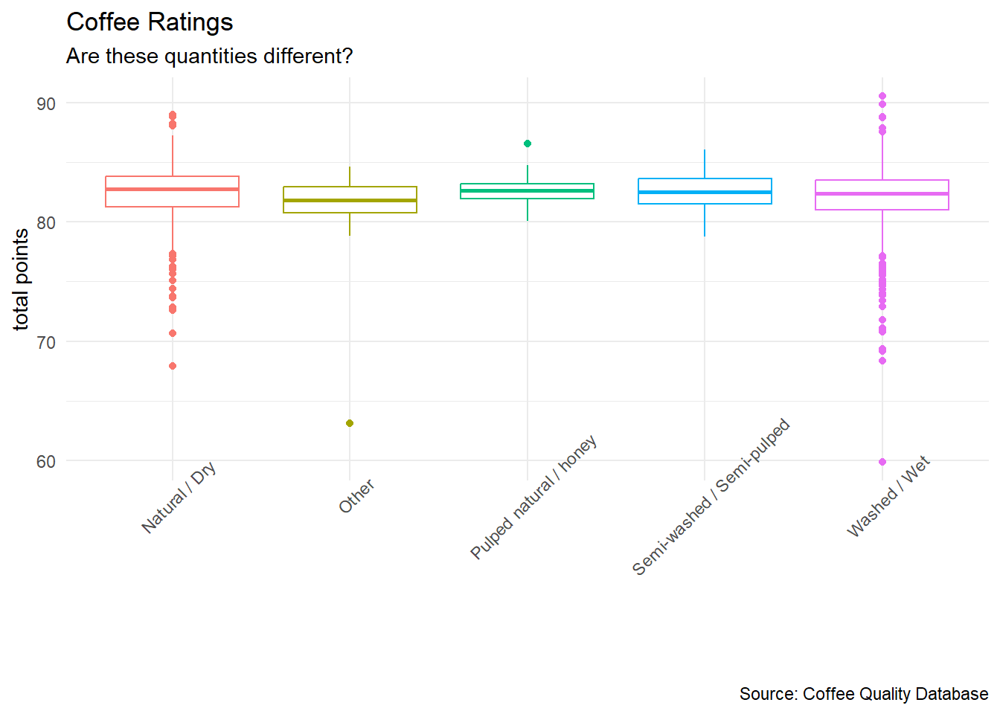
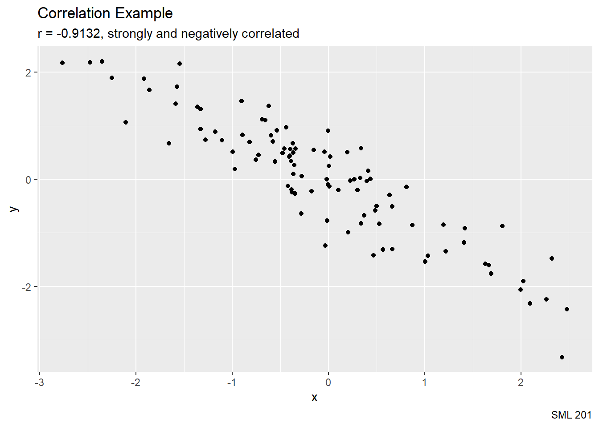
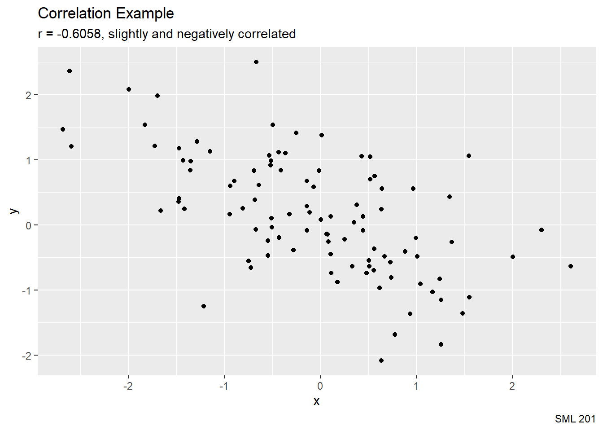
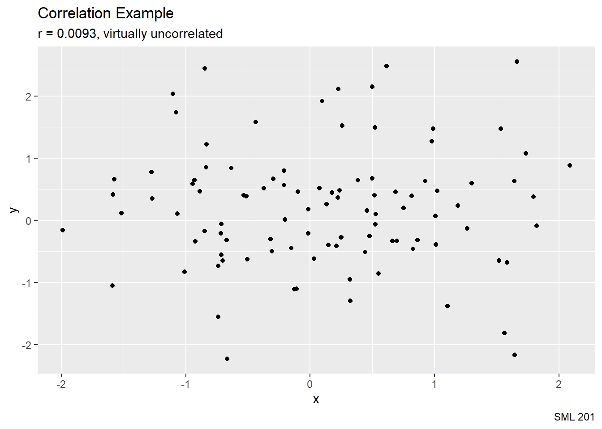
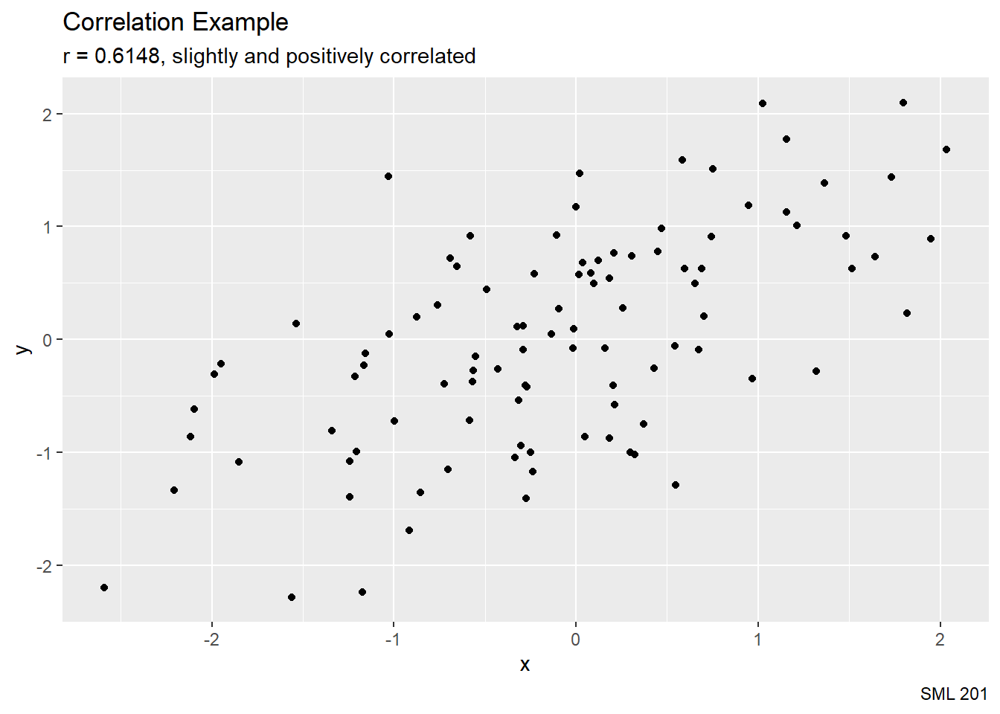
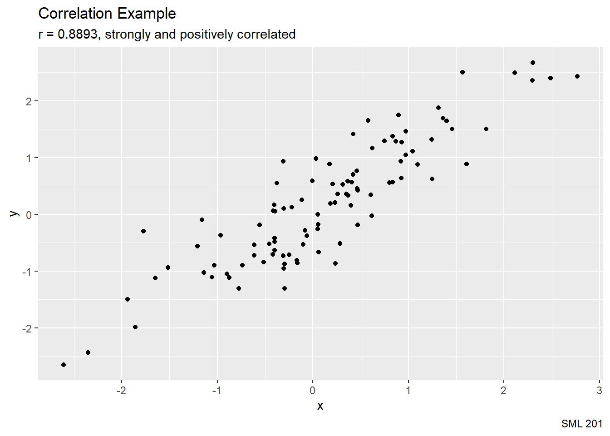
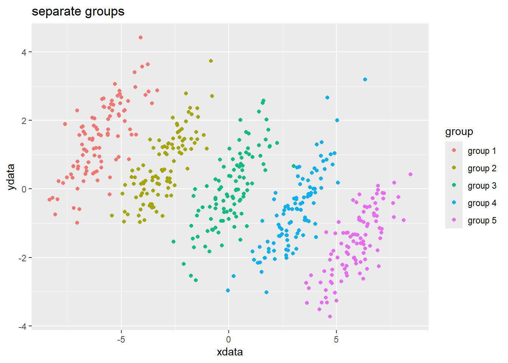

library("corrplot")
library("gt")
library("tidyverse") #tools for data wrangling and visualization
# coffee_df <- readr::read_csv("coffee_ratings.csv")
correlatedValues = function(x, r = 0.9){
r2 = r**2
ve = 1-r2
SD = sqrt(ve)
e = rnorm(length(x), mean=0, sd=SD)
y = r*x + e
return(y)
}
judging_categories <- c("aroma", "flavor", "aftertaste", "acidity", "body", "balance", "uniformity", "clean_cup", "sweetness")SML 201
Start
Goal: Explore covariance
Objective: Compute interquartile ranges and correlations

- image source: XKCD
Data
- Coffee Ratings
- source: Coffee Quality Database
- host: TidyTuesday — July 7, 2020
coffee_df <- readr::read_csv('https://raw.githubusercontent.com/rfordatascience/tidytuesday/master/data/2020/2020-07-07/coffee_ratings.csv')Quantiles
Numerical Variables
str(coffee_df, give.attr = FALSE)spc_tbl_ [1,339 × 43] (S3: spec_tbl_df/tbl_df/tbl/data.frame)
$ total_cup_points : num [1:1339] 90.6 89.9 89.8 89 88.8 ...
$ species : chr [1:1339] "Arabica" "Arabica" "Arabica" "Arabica" ...
$ owner : chr [1:1339] "metad plc" "metad plc" "grounds for health admin" "yidnekachew dabessa" ...
$ country_of_origin : chr [1:1339] "Ethiopia" "Ethiopia" "Guatemala" "Ethiopia" ...
$ farm_name : chr [1:1339] "metad plc" "metad plc" "san marcos barrancas \"san cristobal cuch" "yidnekachew dabessa coffee plantation" ...
$ lot_number : chr [1:1339] NA NA NA NA ...
$ mill : chr [1:1339] "metad plc" "metad plc" NA "wolensu" ...
$ ico_number : chr [1:1339] "2014/2015" "2014/2015" NA NA ...
$ company : chr [1:1339] "metad agricultural developmet plc" "metad agricultural developmet plc" NA "yidnekachew debessa coffee plantation" ...
$ altitude : chr [1:1339] "1950-2200" "1950-2200" "1600 - 1800 m" "1800-2200" ...
$ region : chr [1:1339] "guji-hambela" "guji-hambela" NA "oromia" ...
$ producer : chr [1:1339] "METAD PLC" "METAD PLC" NA "Yidnekachew Dabessa Coffee Plantation" ...
$ number_of_bags : num [1:1339] 300 300 5 320 300 100 100 300 300 50 ...
$ bag_weight : chr [1:1339] "60 kg" "60 kg" "1" "60 kg" ...
$ in_country_partner : chr [1:1339] "METAD Agricultural Development plc" "METAD Agricultural Development plc" "Specialty Coffee Association" "METAD Agricultural Development plc" ...
$ harvest_year : chr [1:1339] "2014" "2014" NA "2014" ...
$ grading_date : chr [1:1339] "April 4th, 2015" "April 4th, 2015" "May 31st, 2010" "March 26th, 2015" ...
$ owner_1 : chr [1:1339] "metad plc" "metad plc" "Grounds for Health Admin" "Yidnekachew Dabessa" ...
$ variety : chr [1:1339] NA "Other" "Bourbon" NA ...
$ processing_method : chr [1:1339] "Washed / Wet" "Washed / Wet" NA "Natural / Dry" ...
$ aroma : num [1:1339] 8.67 8.75 8.42 8.17 8.25 8.58 8.42 8.25 8.67 8.08 ...
$ flavor : num [1:1339] 8.83 8.67 8.5 8.58 8.5 8.42 8.5 8.33 8.67 8.58 ...
$ aftertaste : num [1:1339] 8.67 8.5 8.42 8.42 8.25 8.42 8.33 8.5 8.58 8.5 ...
$ acidity : num [1:1339] 8.75 8.58 8.42 8.42 8.5 8.5 8.5 8.42 8.42 8.5 ...
$ body : num [1:1339] 8.5 8.42 8.33 8.5 8.42 8.25 8.25 8.33 8.33 7.67 ...
$ balance : num [1:1339] 8.42 8.42 8.42 8.25 8.33 8.33 8.25 8.5 8.42 8.42 ...
$ uniformity : num [1:1339] 10 10 10 10 10 10 10 10 9.33 10 ...
$ clean_cup : num [1:1339] 10 10 10 10 10 10 10 10 10 10 ...
$ sweetness : num [1:1339] 10 10 10 10 10 10 10 9.33 9.33 10 ...
$ cupper_points : num [1:1339] 8.75 8.58 9.25 8.67 8.58 8.33 8.5 9 8.67 8.5 ...
$ moisture : num [1:1339] 0.12 0.12 0 0.11 0.12 0.11 0.11 0.03 0.03 0.1 ...
$ category_one_defects : num [1:1339] 0 0 0 0 0 0 0 0 0 0 ...
$ quakers : num [1:1339] 0 0 0 0 0 0 0 0 0 0 ...
$ color : chr [1:1339] "Green" "Green" NA "Green" ...
$ category_two_defects : num [1:1339] 0 1 0 2 2 1 0 0 0 4 ...
$ expiration : chr [1:1339] "April 3rd, 2016" "April 3rd, 2016" "May 31st, 2011" "March 25th, 2016" ...
$ certification_body : chr [1:1339] "METAD Agricultural Development plc" "METAD Agricultural Development plc" "Specialty Coffee Association" "METAD Agricultural Development plc" ...
$ certification_address: chr [1:1339] "309fcf77415a3661ae83e027f7e5f05dad786e44" "309fcf77415a3661ae83e027f7e5f05dad786e44" "36d0d00a3724338ba7937c52a378d085f2172daa" "309fcf77415a3661ae83e027f7e5f05dad786e44" ...
$ certification_contact: chr [1:1339] "19fef5a731de2db57d16da10287413f5f99bc2dd" "19fef5a731de2db57d16da10287413f5f99bc2dd" "0878a7d4b9d35ddbf0fe2ce69a2062cceb45a660" "19fef5a731de2db57d16da10287413f5f99bc2dd" ...
$ unit_of_measurement : chr [1:1339] "m" "m" "m" "m" ...
$ altitude_low_meters : num [1:1339] 1950 1950 1600 1800 1950 ...
$ altitude_high_meters : num [1:1339] 2200 2200 1800 2200 2200 NA NA 1700 1700 1850 ...
$ altitude_mean_meters : num [1:1339] 2075 2075 1700 2000 2075 ...Recall that we can use summary on a numerical variable.
summary(coffee_df$total_cup_points) Min. 1st Qu. Median Mean 3rd Qu. Max.
0.00 81.08 82.50 82.09 83.67 90.58 The dplyr way to compute quantiles includes
coffee_df |>
summarize(min = min(total_cup_points, na.rm = TRUE),
q25 = quantile(total_cup_points, 0.25, na.rm = TRUE),
q50 = quantile(total_cup_points, 0.50, na.rm = TRUE),
q75 = quantile(total_cup_points, 0.75, na.rm = TRUE),
max = max(total_cup_points, na.rm = TRUE))# A tibble: 1 × 5
min q25 q50 q75 max
<dbl> <dbl> <dbl> <dbl> <dbl>
1 0 81.1 82.5 83.7 90.6We can verify that about 50% of the data are below the median value
mean(coffee_df$total_cup_points <
median(coffee_df$total_cup_points))[1] 0.4899178We can verify that about 75% of the data are indeed below that value for the 0.75 quantile (i.e. 75th percentile.)
mean(coffee_df$total_cup_points < 83.67)[1] 0.7490665The interquartile range is the 75th percentile minus the 25th percentile.
summary(coffee_df$total_cup_points) Min. 1st Qu. Median Mean 3rd Qu. Max.
0.00 81.08 82.50 82.09 83.67 90.58 IQR(coffee_df$total_cup_points, na.rm = TRUE)[1] 2.59Categorical Group
The dplyr code is easily adaptable to grouped data.
coffee_df |>
group_by(species) |>
summarize(min = min(total_cup_points, na.rm = TRUE),
q25 = quantile(total_cup_points, 0.25, na.rm = TRUE),
q50 = quantile(total_cup_points, 0.50, na.rm = TRUE),
q75 = quantile(total_cup_points, 0.75, na.rm = TRUE),
max = max(total_cup_points, na.rm = TRUE))# A tibble: 2 × 6
species min q25 q50 q75 max
<chr> <dbl> <dbl> <dbl> <dbl> <dbl>
1 Arabica 0 81.2 82.5 83.7 90.6
2 Robusta 73.8 80.2 81.5 82.5 83.8Boxplots
For these lecture slides, I wanted that previous table to be displayed vertically. This is a crude way to write a summary table as a vertical data frame.
summary_df <- coffee_df |>
group_by(species) |>
mutate(min_val = min(total_cup_points, na.rm = TRUE),
q25 = quantile(total_cup_points, 0.25, na.rm = TRUE),
q50 = quantile(total_cup_points, 0.50, na.rm = TRUE),
q75 = quantile(total_cup_points, 0.75, na.rm = TRUE),
max_val = max(total_cup_points, na.rm = TRUE)) |>
ungroup() |>
select(species, min_val, q25, q50, q75, max_val) |>
distinct() |>
rev() |> #reverse order of columns
t() |> #transpose (switch rows and columns)
data.frame() |>
slice(1:5) |>
set_names(c("Arabica", "Robusta"))Here I color code the data within the gt framework.
summary_df |>
gt() |>
tab_style(
style = list(cell_text(color = "red")),
locations = cells_body(columns = "Arabica")
) |>
tab_style(
style = list(cell_text(color = "blue")),
locations = cells_body(columns = "Robusta")
)| Arabica | Robusta |
|---|---|
| 90.58 | 83.75 |
| 83.67 | 82.52 |
| 82.5 | 81.5 |
| 81.17 | 80.17 |
| 0.00 | 73.75 |
A boxplot is useful to graph a numerical variable (on the vertical axis) across a categorical variable (on the horizontal axis).
coffee_df |>
filter(total_cup_points > 0) |> #avoid one outlier
ggplot() +
geom_boxplot(aes(x = species, y = total_cup_points, color = species)) +
labs(title = "Coffee Ratings",
subtitle = "Total points vs Species",
caption = "Source: Coffee Quality Database",
x = "species", y = "total points") +
scale_color_manual(values = c("red","blue")) +
theme_minimal() +
theme(legend.position = "none")Another Example
coffee_df |>
filter(!is.na(processing_method)) |>
group_by(processing_method) |>
summarize(min = min(total_cup_points, na.rm = TRUE),
q25 = quantile(total_cup_points, 0.25, na.rm = TRUE),
q50 = quantile(total_cup_points, 0.50, na.rm = TRUE),
q75 = quantile(total_cup_points, 0.75, na.rm = TRUE),
max = max(total_cup_points, na.rm = TRUE))# A tibble: 5 × 6
processing_method min q25 q50 q75 max
<chr> <dbl> <dbl> <dbl> <dbl> <dbl>
1 Natural / Dry 67.9 81.2 82.8 83.8 89
2 Other 63.1 80.8 81.8 83.0 84.7
3 Pulped natural / honey 80.1 82.0 82.7 83.2 86.6
4 Semi-washed / Semi-pulped 78.8 81.5 82.5 83.6 86.1
5 Washed / Wet 59.8 81 82.4 83.5 90.6coffee_df |>
filter(!is.na(processing_method)) |>
group_by(processing_method) |>
mutate(min_val = min(total_cup_points, na.rm = TRUE),
q25 = quantile(total_cup_points, 0.25, na.rm = TRUE),
q50 = quantile(total_cup_points, 0.50, na.rm = TRUE),
q75 = quantile(total_cup_points, 0.75, na.rm = TRUE),
max_val = max(total_cup_points, na.rm = TRUE)) |>
ungroup() |>
select(processing_method, min_val, q25, q50, q75, max_val) |>
distinct() |>
rev() |> #reverse order of columns
t() |> #transpose (switch rows and columns)
data.frame() |>
slice(1:5) |>
set_names(c("washed", "natural", "pulped", "semi", "other")) washed natural pulped semi other
max_val 90.58 89.00 86.58 86.08 84.67
q75 83.5000 83.8300 83.2075 83.6425 82.9575
q50 82.420 82.750 82.665 82.500 81.830
q25 81.0000 81.2500 81.9550 81.5000 80.7925
min_val 59.83 67.92 80.08 78.75 63.08coffee_df |>
filter(!is.na(processing_method)) |>
ggplot() +
geom_boxplot(aes(x = processing_method, y = total_cup_points,
color = processing_method)) +
labs(title = "Coffee Ratings",
subtitle = "Total Points vs Processing Method",
caption = "Source: Coffee Quality Database",
x = "", y = "total points") +
theme_minimal() +
theme(axis.text.x = element_text(angle = 45),
legend.position = "none")
Scatterplots
A scatterplot helps us visualize two numerical variables.
coffee_df |>
filter(total_cup_points > 0) |>
ggplot(aes(x = acidity, y = body)) +
geom_point() +
labs(title = "Coffee Ratings",
subtitle = "Do the data vary together?",
caption = "Source: Coffee Quality Database") +
theme_minimal()Covariance
For data \((X,Y)\) listed as \(n\) data points \((x_{i}, y_{i})\), the covariance is defined as
\[\begin{array}{rcl} \text{Cov}(X,Y) & = & \frac{1}{2n^{2}}\sum_{i=1}^{n}\sum_{j=1}^{n}(x_{i} - x_{j})(y_{i} - y_{j}) \\ ~ & = & \text{E}[X] \cdot \text{E}[Y] - \text{E}[XY] \\ \end{array}\]
- image source: Fissics
- Are resultant numbers large or small?
- Units? (e.g. “burger-fries”)
Standardization
z-score
\[\begin{array}{ccc} z & = & \frac{x - \bar{x}}{s} \\ ~ & = & \frac{\text{deviation}}{\text{standard deviation}} \\ \end{array}\]
Correlation
\[\begin{array}{ccc} r & = & \frac{\sum_{i=1}^{n} (x_{i} - \bar{x})(y_{i} - \bar{y})}{\sqrt{\sum_{i=1}^{n} (x_{i} - \bar{x})}\sqrt{\sum_{i=1}^{n} (y_{i} - \bar{y})}} \\ ~ & = & \frac{\text{Cov}(X,Y)}{\text{SD}(X) \cdot \text{SD}(Y)} \\ ~ & = & \frac{1}{n-1}\sum_{i=1}^{n}\left(\frac{x_{i}-\bar{x}}{s_{x}}\right)\left(\frac{y_{i}-\bar{y}}{s_{y}}\right) \\ \end{array}\]
Claim: The correlation coefficient \(r\) has a mathematical range in \([-1,1]\):
\[-1 \leq r \leq 1\]
Proof
[refer to a Calculus-based Probability course]
Correlation
In this course, we will simply follow the Pearson suggestions for interpreting correlation values:
- \(-1.0 \leq r \leq -0.7\): highly and negatively correlated
- \(-0.7 < r < -0.4\): slightly and negatively correlated
- \(-0.4 \leq r \leq 0.4\): virtually uncorrelated
- \(0.4 < r < 0.7\): slightly and positively correlated
- \(0.7 \leq r \leq 1.0\): highly and positively correlated
Demonstration





Examples
Compute the correlation between flavor and aftertaste
cor(coffee_df$flavor, coffee_df$aftertaste)[1] 0.8956718Compute the correlation between uniformity and clean_cup
cor(coffee_df$uniformity, coffee_df$clean_cup,
use = "pairwise.complete.obs")[1] 0.5262187Compute the correlation between aroma and sweetness
cor(coffee_df$aroma, coffee_df$sweetness,
use = "pairwise.complete.obs")[1] 0.2534933Correlation Matrices
coffee_df |>
select_if(is.numeric) |>
cor(use = "pairwise.complete.obs") |>
corrplot.mixed(order = "FPC", upper = "ellipse")coffee_df |>
select(any_of(c(judging_categories, "total_cup_points"))) |>
cor() |>
corrplot.mixed(order = "FPC", upper = "ellipse")
Quo Vadimus?
Continue to complete BLTs and precept assignments
Project 1:
- Assigned! Sept 23
- Due: Oct 2
Exam 1: Oct 10
Refer to weekly announcement for more info
Footnotes
(optional) Additional Resources
- vignette about
corrplotby Taiyun Wei and Viliam Simko
Session Info
sessionInfo()R version 4.4.1 (2024-06-14 ucrt)
Platform: x86_64-w64-mingw32/x64
Running under: Windows 11 x64 (build 22621)
Matrix products: default
locale:
[1] LC_COLLATE=English_United States.utf8
[2] LC_CTYPE=English_United States.utf8
[3] LC_MONETARY=English_United States.utf8
[4] LC_NUMERIC=C
[5] LC_TIME=English_United States.utf8
time zone: America/New_York
tzcode source: internal
attached base packages:
[1] stats graphics grDevices utils datasets methods base
other attached packages:
[1] lubridate_1.9.3 forcats_1.0.0 stringr_1.5.1 dplyr_1.1.4
[5] purrr_1.0.2 readr_2.1.5 tidyr_1.3.1 tibble_3.2.1
[9] ggplot2_3.5.1 tidyverse_2.0.0 gt_0.11.0 corrplot_0.94
loaded via a namespace (and not attached):
[1] sass_0.4.9 utf8_1.2.4 generics_0.1.3 xml2_1.3.6
[5] stringi_1.8.4 hms_1.1.3 digest_0.6.37 magrittr_2.0.3
[9] evaluate_1.0.0 grid_4.4.1 timechange_0.3.0 fastmap_1.2.0
[13] jsonlite_1.8.9 fansi_1.0.6 scales_1.3.0 cli_3.6.3
[17] rlang_1.1.4 crayon_1.5.3 bit64_4.5.2 munsell_0.5.1
[21] withr_3.0.1 yaml_2.3.10 tools_4.4.1 parallel_4.4.1
[25] tzdb_0.4.0 colorspace_2.1-1 curl_5.2.3 vctrs_0.6.5
[29] R6_2.5.1 lifecycle_1.0.4 htmlwidgets_1.6.4 bit_4.5.0
[33] vroom_1.6.5 pkgconfig_2.0.3 pillar_1.9.0 gtable_0.3.5
[37] glue_1.7.0 xfun_0.47 tidyselect_1.2.1 rstudioapi_0.16.0
[41] knitr_1.48 farver_2.1.2 htmltools_0.5.8.1 labeling_0.4.3
[45] rmarkdown_2.28 compiler_4.4.1
Example Callout Block
note, tip, warning, caution, or important